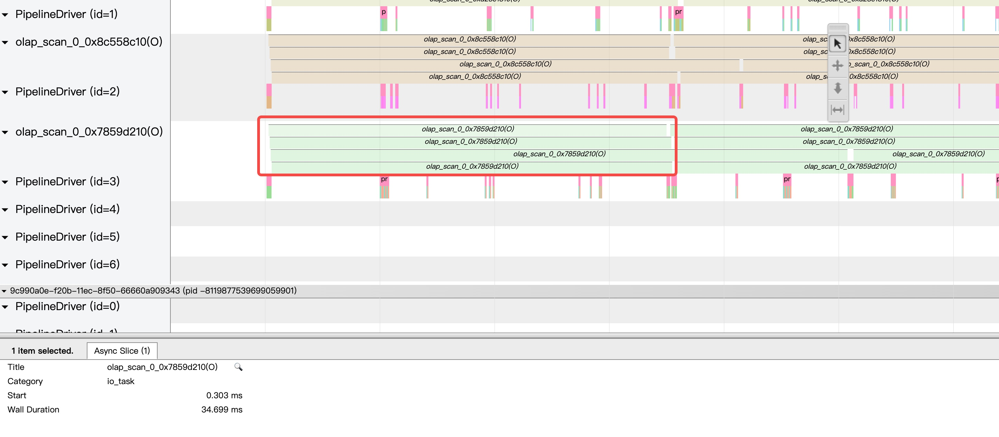

The Query Observability Of StarRocks
作者: 康凯森
日期: 2023-02-05
分类: OLAP
- StarRocks Explain + SQL
- StarRocks SQL Optimizer Trace performance
- StarRocks SQL Optimizer Detail Trace Log
- StarRocks Execution Trace visualization
- StarRocks Query Profile
- StarRocks Query Dump
- StarRocks SQL Audit Log
- StarRocks Runtime Query metrics
过去两年，我们开发了很多查询层的分析，诊断工具，加强了 StarRocks 查询层的可观测性，今天给大家简单介绍下，之后我们还会在可观测性方面继续加强。
StarRocks Explain + SQL
参考 https://docs.starrocks.io/en-us/latest/administration/Query_planning#plan-analysis 可以看到每个 SQL 的执行计划
explain SELECT t2_126.c_2_0 FROM t2 AS t2_126 INNER JOIN (SELECT v0_127.c_0_2, v0_127.c_0_7 FROM v0 AS v0_127 WHE
RE EXISTS (SELECT v0_127.c_0_7 FROM t1 AS t1_125, v0 AS v0_127) ) subv0 ON t2_126.c_2_5 = subv0.c_0_2;
StarRocks Explain logical + SQL
相比 Explain + SQL，信息更少，可以更方便地看到整个执行计划
mysql> Explain logical SELECT t2_126.c_2_0 FROM t2 AS t2_126 INNER JOIN (SELECT v0_127.c_0_2, v0_127.c_0_7 FROM v0 AS v0_127 WHERE EXISTS (SELECT v0_127.c_0_7 FROM t1 AS t1_125, v0 AS v0_127) ) subv0 ON t2_126.c_2_5 = subv0.c_0_2;
+-----------------------------------------------------------------------------------------------------------------------+
| Explain String |
+-----------------------------------------------------------------------------------------------------------------------+
| - Output => [1:c_2_0] |
| - HASH/INNER JOIN [61:cast = 60:cast] => [1:c_2_0] |
| Estimates: {row: 1, cpu: 6.00, memory: 2.00, network: 0.00, cost: 911.02} |
| - EXCHANGE(SHUFFLE) [61] |
| Estimates: {row: 1, cpu: 4.00, memory: 0.00, network: 0.00, cost: 902.50} |
| - NESTLOOP/CROSS JOIN => [61:cast] |
| Estimates: {row: 1, cpu: 8.00, memory: 200.00, network: 0.00, cost: 900.50} |
| 61:cast := cast(10:c_0_2 as datetime) |
| - SCAN [t0] => [10:c_0_2] |
| Estimates: {row: 1, cpu: 84.00, memory: 0.00, network: 0.00, cost: 42.00} |
| partitionRatio: 1/5, tabletRatio: 3/3 |
| predicate: cast(10:c_0_2 as datetime) IS NOT NULL |
| - EXCHANGE(BROADCAST) |
| Estimates: {row: 1, cpu: 1.00, memory: 1.00, network: 1.00, cost: 454.50} |
| - LIMIT [1] |
| - EXCHANGE(GATHER) |
| Estimates: {row: 1, cpu: 1.00, memory: 0.00, network: 1.00, cost: 450.50} |
| - NESTLOOP/CROSS JOIN => [65:auto_fill_col] |
| Estimates: {row: 1, cpu: 2.00, memory: 200.00, network: 0.00, cost: 448.50} |
| 65:auto_fill_col := 1 |
| limit: 1 |
| - SCAN [t1] => [67:auto_fill_col] |
| Estimates: {row: 1, cpu: 2.00, memory: 0.00, network: 0.00, cost: 1.00} |
| partitionRatio: 1/9, tabletRatio: 3/3 |
| 67:auto_fill_col := 1 |
| limit: 1 |
| - EXCHANGE(BROADCAST) |
| Estimates: {row: 1, cpu: 1.00, memory: 1.00, network: 1.00, cost: 46.50} |
| - SCAN [t0] => [66:auto_fill_col] |
| Estimates: {row: 1, cpu: 85.00, memory: 0.00, network: 0.00, cost: 42.50} |
| partitionRatio: 1/5, tabletRatio: 3/3 |
| 66:auto_fill_col := 1 |
| - EXCHANGE(SHUFFLE) [60] |
| Estimates: {row: 1, cpu: ?, memory: ?, network: ?, cost: 2.5} |
| - SCAN [t2] => [1:c_2_0, 60:cast] |
| Estimates: {row: 1, cpu: ?, memory: ?, network: ?, cost: 1.5} |
| partitionRatio: 0/46, tabletRatio: 0/0 |
| 60:cast := cast(6:c_2_5 as datetime) |
| predicate: cast(6:c_2_5 as datetime) IS NOT NULL |
+-----------------------------------------------------------------------------------------------------------------------+
39 rows in set (0.04 sec)
Starrocks Explain Cost + SQL
相比 Explain + SQL，信息更多，有了列的统计信息，列的类型，Nullable 等信息
mysql> Explain costs SELECT t2_126.c_2_0 FROM t2 AS t2_126 INNER JOIN (SELECT v0_127.c_0_2, v0_127.c_0_7 FROM v0 AS v0_127
WHERE EXISTS (SELECT v0_127.c_0_7 FROM t1 AS t1_125, v0 AS v0_127) ) subv0 ON t2_126.c_2_5 = subv0.c_0_2;
+--------------------------------------------------------------------------------------+
| Explain String |
+--------------------------------------------------------------------------------------+
| PLAN FRAGMENT 0(F10) |
| Output Exprs:1: c_2_0 |
| Input Partition: UNPARTITIONED |
| RESULT SINK |
| |
| 19:EXCHANGE |
| cardinality: 1 |
| |
| PLAN FRAGMENT 1(F09) |
| |
| Input Partition: HASH_PARTITIONED: 61: cast |
| OutPut Partition: UNPARTITIONED |
| OutPut Exchange Id: 19 |
| |
| 18:Project |
| | output columns: |
| | 1 <-> [1: c_2_0, DATE, true] |
| | cardinality: 1 |
| | column statistics: |
| | * c_2_0-->[-Infinity, Infinity, 0.0, 1.0, 1.0] UNKNOWN |
| | |
| 17:HASH JOIN |
| | join op: INNER JOIN (PARTITIONED) |
| | equal join conjunct: [61: cast, DATETIME, true] = [60: cast, DATETIME, true] |
| | output columns: 1 |
| | cardinality: 1 |
| | column statistics: |
| | * c_2_0-->[-Infinity, Infinity, 0.0, 1.0, 1.0] UNKNOWN |
| | * cast-->[-Infinity, Infinity, 0.0, 1.0, 1.0] UNKNOWN |
| | * cast-->[1.2638304E9, 1.2638304E9, 0.0, 4.0, 1.0] ESTIMATE |
| | |
| |----16:EXCHANGE |
| | distribution type: SHUFFLE |
| | partition exprs: [60: cast, DATETIME, true] |
| | cardinality: 1 |
| | |
| 13:EXCHANGE |
| distribution type: SHUFFLE |
| partition exprs: [61: cast, DATETIME, true] |
| cardinality: 1 |
| |
| PLAN FRAGMENT 2(F07) |
| |
| Input Partition: RANDOM |
| OutPut Partition: HASH_PARTITIONED: 60: cast |
| OutPut Exchange Id: 16 |
| |
| 15:Project |
| | output columns: |
| | 1 <-> [1: c_2_0, DATE, true] |
| | 60 <-> cast([6: c_2_5, VARCHAR, true] as DATETIME) |
| | cardinality: 1 |
| | column statistics: |
| | * c_2_0-->[-Infinity, Infinity, 0.0, 1.0, 1.0] UNKNOWN |
| | * cast-->[-Infinity, Infinity, 0.0, 1.0, 1.0] UNKNOWN |
| | |
| 14:OlapScanNode |
| table: t2, rollup: t2 |
| preAggregation: off. Reason: Has can not pre-aggregation Join |
| Predicates: CAST(6: c_2_5 AS DATETIME) IS NOT NULL |
| partitionsRatio=0/46, tabletsRatio=0/0 |
| tabletList= |
| actualRows=0, avgRowSize=3.0 |
| cardinality: 1 |
| column statistics: |
| * c_2_0-->[-Infinity, Infinity, 0.0, 1.0, 1.0] UNKNOWN |
| * c_2_5-->[-Infinity, Infinity, 0.0, 1.0, 1.0] UNKNOWN |
| * cast-->[-Infinity, Infinity, 0.0, 1.0, 1.0] UNKNOWN |
| |
| PLAN FRAGMENT 3(F00) |
| |
| Input Partition: RANDOM |
| OutPut Partition: HASH_PARTITIONED: 61: cast |
| OutPut Exchange Id: 13 |
| |
| 12:Project |
| | output columns: |
| | 61 <-> cast([10: c_0_2, DATE, false] as DATETIME) |
| | cardinality: 1 |
| | column statistics: |
| | * cast-->[1.2638304E9, 1.2638304E9, 0.0, 4.0, 1.0] ESTIMATE |
| | |
| 11:NESTLOOP JOIN |
| | join op: CROSS JOIN |
| | cardinality: 1 |
| | column statistics: |
| | * c_0_2-->[1.2638304E9, 1.2638304E9, 0.0, 4.0, 1.0] ESTIMATE |
| | * cast-->[1.2638304E9, 1.2638304E9, 0.0, 4.0, 1.0] ESTIMATE |
| | * auto_fill_col-->[1.0, 1.0, 0.0, 1.0, 1.0] ESTIMATE |
| | |
| |----10:EXCHANGE |
| | distribution type: BROADCAST |
| | limit: 1 |
| | cardinality: 1 |
| | |
| 1:Project |
| | output columns: |
| | 10 <-> [10: c_0_2, DATE, false] |
| | cardinality: 1 |
| | column statistics: |
| | * c_0_2-->[1.2638304E9, 1.2638304E9, 0.0, 4.0, 1.0] ESTIMATE |
| | |
| 0:OlapScanNode |
| table: t0, rollup: t0 |
| preAggregation: off. Reason: Has can not pre-aggregation Join |
| Predicates: CAST(10: c_0_2 AS DATETIME) IS NOT NULL |
| partitionsRatio=1/5, tabletsRatio=3/3 |
| tabletList=14013,14015,14017 |
| actualRows=1, avgRowSize=84.0 |
| cardinality: 1 |
| column statistics: |
| * c_0_0-->[1.2625344E9, 1.2625344E9, 0.0, 4.0, 1.0] ESTIMATE |
| * c_0_1-->[4.031006053147651E20, 4.031006053147651E20, 0.0, 16.0, 1.0] ESTIMATE |
| * c_0_2-->[1.2638304E9, 1.2638304E9, 0.0, 4.0, 1.0] ESTIMATE |
| * c_0_3-->[1.262822414E9, 1.262822414E9, 0.0, 8.0, 1.0] ESTIMATE |
| * c_0_4-->[1.2633984E9, 1.2633984E9, 0.0, 4.0, 1.0] ESTIMATE |
| * c_0_5-->[1.263081614E9, 1.263081614E9, 0.0, 8.0, 1.0] ESTIMATE |
| * c_0_6-->[9.175465853287E12, 9.175465853287E12, 0.0, 8.0, 1.0] ESTIMATE |
| * c_0_7-->[-Infinity, Infinity, 1.0, 8.0, 0.0] ESTIMATE |
| * c_0_8-->[-Infinity, Infinity, 0.0, 1.0, 1.0] UNKNOWN |
| * c_0_9-->[-Infinity, Infinity, 0.0, 1.0, 1.0] UNKNOWN |
| * c_0_11-->[-Infinity, Infinity, 0.0, 1.0, 1.0] UNKNOWN |
| * c_0_12-->[-2.147055719E9, -2.147055719E9, 0.0, 8.0, 1.0] ESTIMATE |
| * c_0_13-->[-Infinity, Infinity, 0.0, 1.0, 1.0] UNKNOWN |
| * c_0_14-->[-Infinity, Infinity, 0.0, 1.0, 1.0] UNKNOWN |
| * c_0_15-->[10.0, 10.0, 0.0, 2.0, 1.0] ESTIMATE |
| * c_0_16-->[-Infinity, Infinity, 0.0, 1.0, 1.0] UNKNOWN |
| * c_0_17-->[-1.037257802E9, -1.037257802E9, 0.0, 8.0, 1.0] ESTIMATE |
| |
| PLAN FRAGMENT 4(F04) |
| |
| Input Partition: UNPARTITIONED |
| OutPut Partition: UNPARTITIONED |
| OutPut Exchange Id: 10 |
| |
| 9:EXCHANGE |
| distribution type: GATHER |
| limit: 1 |
| cardinality: 1 |
| |
| PLAN FRAGMENT 5(F01) |
| |
| Input Partition: RANDOM |
| OutPut Partition: UNPARTITIONED |
| OutPut Exchange Id: 09 |
| |
| 8:Project |
| | output columns: |
| | 65 <-> 1 |
| | limit: 1 |
| | cardinality: 1 |
| | column statistics: |
| | * auto_fill_col-->[1.0, 1.0, 0.0, 1.0, 1.0] ESTIMATE |
| | |
| 7:NESTLOOP JOIN |
| | join op: CROSS JOIN |
| | limit: 1 |
| | cardinality: 1 |
| | column statistics: |
| | * auto_fill_col-->[1.0, 1.0, 0.0, 1.0, 1.0] ESTIMATE |
| | * auto_fill_col-->[1.0, 1.0, 0.0, 1.0, 1.0] ESTIMATE |
| | * auto_fill_col-->[1.0, 1.0, 0.0, 1.0, 1.0] ESTIMATE |
| | |
| |----6:EXCHANGE |
| | distribution type: BROADCAST |
| | cardinality: 1 |
| | |
| 3:Project |
| | output columns: |
| | 67 <-> 1 |
| | limit: 1 |
| | cardinality: 1 |
| | column statistics: |
| | * auto_fill_col-->[1.0, 1.0, 0.0, 1.0, 1.0] ESTIMATE |
| | |
| 2:OlapScanNode |
| table: t1, rollup: t1 |
| preAggregation: on |
| partitionsRatio=1/9, tabletsRatio=3/3 |
| tabletList=14054,14056,14058 |
| actualRows=1, avgRowSize=2.0 |
| limit: 1 |
| cardinality: 1 |
| column statistics: |
| * c_1_7-->[0.0, 0.0, 0.0, 1.0, 1.0] ESTIMATE |
| * auto_fill_col-->[1.0, 1.0, 0.0, 1.0, 1.0] ESTIMATE |
| |
| PLAN FRAGMENT 6(F02) |
| |
| Input Partition: RANDOM |
| OutPut Partition: UNPARTITIONED |
| OutPut Exchange Id: 06 |
| |
| 5:Project |
| | output columns: |
| | 66 <-> 1 |
| | cardinality: 1 |
| | column statistics: |
| | * auto_fill_col-->[1.0, 1.0, 0.0, 1.0, 1.0] ESTIMATE |
| | |
| 4:OlapScanNode |
| table: t0, rollup: t0 |
| preAggregation: off. Reason: Has can not pre-aggregation Join |
| partitionsRatio=1/5, tabletsRatio=3/3 |
| tabletList=14013,14015,14017 |
| actualRows=1, avgRowSize=85.0 |
| cardinality: 1 |
| column statistics: |
| * c_0_0-->[1.2625344E9, 1.2625344E9, 0.0, 4.0, 1.0] ESTIMATE |
| * c_0_1-->[4.031006053147651E20, 4.031006053147651E20, 0.0, 16.0, 1.0] ESTIMATE |
| * c_0_2-->[1.2638304E9, 1.2638304E9, 0.0, 4.0, 1.0] ESTIMATE |
| * c_0_3-->[1.262822414E9, 1.262822414E9, 0.0, 8.0, 1.0] ESTIMATE |
| * c_0_4-->[1.2633984E9, 1.2633984E9, 0.0, 4.0, 1.0] ESTIMATE |
| * c_0_5-->[1.263081614E9, 1.263081614E9, 0.0, 8.0, 1.0] ESTIMATE |
| * c_0_6-->[9.175465853287E12, 9.175465853287E12, 0.0, 8.0, 1.0] ESTIMATE |
| * c_0_7-->[-Infinity, Infinity, 1.0, 8.0, 0.0] ESTIMATE |
| * c_0_8-->[-Infinity, Infinity, 0.0, 1.0, 1.0] UNKNOWN |
| * c_0_9-->[-Infinity, Infinity, 0.0, 1.0, 1.0] UNKNOWN |
| * c_0_11-->[-Infinity, Infinity, 0.0, 1.0, 1.0] UNKNOWN |
| * c_0_12-->[-2.147055719E9, -2.147055719E9, 0.0, 8.0, 1.0] ESTIMATE |
| * c_0_13-->[-Infinity, Infinity, 0.0, 1.0, 1.0] UNKNOWN |
| * c_0_14-->[-Infinity, Infinity, 0.0, 1.0, 1.0] UNKNOWN |
| * c_0_15-->[10.0, 10.0, 0.0, 2.0, 1.0] ESTIMATE |
| * c_0_16-->[-Infinity, Infinity, 0.0, 1.0, 1.0] UNKNOWN |
| * c_0_17-->[-1.037257802E9, -1.037257802E9, 0.0, 8.0, 1.0] ESTIMATE |
| * auto_fill_col-->[1.0, 1.0, 0.0, 1.0, 1.0] ESTIMATE |
+--------------------------------------------------------------------------------------+
226 rows in set (0.04 sec)
StarRocks SQL Optimizer Trace performance
功能： 可以详细看到 SQL Optimize 阶段每一步的具体函数，可以用来做 Optimizer 的性能分析
mysql> TRACE OPTIMIZER SELECT t2_126.c_2_0 FROM t2 AS t2_126 INNER JOIN (SELECT v0_127.c_0_2, v0_127.c_0_7 FROM v0 AS v0_127 WHERE EXISTS (SELECT v0_127.c_0_7 FROM t1 AS t1_125, v0 AS v0_127) ) subv0 ON t2_126.c_2_5 = subv0.c_0_2;
+-------------------------------------------------------------------------------------+
| Explain String |
+-------------------------------------------------------------------------------------+
| 4229908ms|-- Total[1] 48ms |
| 4229908ms| -- Analyzer[1] 33ms |
| 4229942ms| -- Transformer[1] 1ms |
| 4229943ms| -- Optimizer[1] 12ms |
| 4229943ms| -- Optimizer.RuleBaseOptimize[1] 3ms |
| 4229943ms| -- Optimizer.RuleBaseOptimize.RewriteTreeTask[44] 2ms |
| 4229947ms| -- Optimizer.CostBaseOptimize[1] 8ms |
| 4229947ms| -- Optimizer.CostBaseOptimize.OptimizeGroupTask[16] 0ms |
| 4229947ms| -- Optimizer.CostBaseOptimize.OptimizeExpressionTask[40] 0ms |
| 4229947ms| -- Optimizer.CostBaseOptimize.ExploreGroupTask[48] 0ms |
| 4229947ms| -- Optimizer.CostBaseOptimize.DeriveStatsTask[40] 1ms |
| 4229947ms| -- Optimizer.CostBaseOptimize.ApplyRuleTask[61] 0ms |
| 4229948ms| -- Optimizer.CostBaseOptimize.EnforceAndCostTask[38] 5ms |
| 4229955ms| -- Optimizer.PhysicalRewrite[1] 0ms |
| 4229955ms| -- ExecPlanBuild[1] 1ms |
+-------------------------------------------------------------------------------------+
15 rows in set (0.05 sec)
StarRocks SQL Optimizer Detail Trace Log
功能： 可以详细看到 一个 SQL 在 Parse, Analyze, Optimize 每个阶段的详细变化，深入理解 Starrocks 优化器的执行过程
用法： set enable_optimizer_trace_log first, then query the sql, and
set enable_optimizer_trace_log = true;
Parsed Tree
[OptimizerTraceUtil.log():136] [TRACE QUERY e94c1073-a61a-11ed-a188-5254007b45e6] after parse:
QueryStatement{
queryRelation=SelectRelation{
selectList=com.starrocks.sql.ast.SelectList@373a715b
fromRelation=JoinRelation{joinType=INNER JOIN, left=t2, right=SubqueryRelation{
alias=subv0
query=QueryStatement{
queryRelation=SelectRelation{
selectList=com.starrocks.sql.ast.SelectList@74cb51d5
fromRelation=v0
predicate=EXISTS (SELECT v0_127.c_0_7 FROM t1 AS t1_125 , v0 AS v0_127 )
groupByClause=null
having=null
sortClause=[]
limit=null
}
}
}, onPredicate=BinaryPredicate{id=null, type=INVALID_TYPE, sel=-1.0, #distinct=-1, scale=-1}}
predicate=null
groupByClause=null
having=null
sortClause=[]
limit=null
}
}
AST Tree
[OptimizerTraceUtil.log():136] [TRACE QUERY e94c1073-a61a-11ed-a188-5254007b45e6] after analyze:
QueryStatement{
queryRelation=SelectRelation{
selectList=com.starrocks.sql.ast.SelectList@373a715b
fromRelation=JoinRelation{joinType=INNER JOIN, left=test.t2, right=SubqueryRelation{
alias=subv0
query=QueryStatement{
queryRelation=SelectRelation{
selectList=com.starrocks.sql.ast.SelectList@74cb51d5
fromRelation=null
predicate=EXISTS (SELECT test.v0_127.c_0_7 FROM test.t1 AS t1_125 , `test`.`v0` AS v0_127 )
groupByClause=null
having=null
sortClause=[]
limit=null
}
}
}, onPredicate=BinaryPredicate{id=null, type=BOOLEAN, sel=-1.0, #distinct=-1, scale=-1}}
predicate=null
groupByClause=null
having=null
sortClause=[]
limit=null
}
}
Init logicOperatorTree:
[OptimizerTraceUtil.log():136] [TRACE QUERY e94c1073-a61a-11ed-a188-5254007b
45e6] origin logicOperatorTree:
LogicalProjectOperator {projection=[1: c_2_0]}
-> LogicalProjectOperator {projection=[1: c_2_0, 2: c_2_1, 3: c_2_2, 4: c_2_3, 5: c_2_4, 6: c_2_5, 7: c_2_6, 10: c_0_2, 15: c_0_7]}
-> LOGICAL_JOIN {INNER JOIN, onPredicate = cast(6: c_2_5 as datetime) = cast(10: c_0_2 as datetime) , Predicate = null}
-> LogicalProjectOperator {projection=[1: c_2_0, 2: c_2_1, 3: c_2_2, 4: c_2_3, 5: c_2_4, 6: c_2_5, 7: c_2_6]}
-> LogicalOlapScanOperator {table=14154, selectedPartitionId=null, outputColumns=[1: c_2_0, 2: c_2_1, 3: c_2_2, 4: c_2_3, 5:
c_2_4, 6: c_2_5, 7: c_2_6], predicate=null, limit=-1}
-> LogicalProjectOperator {projection=[10: c_0_2, 15: c_0_7]}
-> LOGICAL_APPLY
-> LogicalProjectOperator {projection=[8: c_0_0, 9: c_0_1, 10: c_0_2, 11: c_0_3, 12: c_0_4, 13: c_0_5, 14: c_0_6, 15: c_0
_7, 16: c_0_8, 17: c_0_9, 19: c_0_11, 20: c_0_12, 21: c_0_13, 22: c_0_14, 23: c_0_15, 24: c_0_16, 25: c_0_17]}
-> LogicalAggregation {type=GLOBAL ,aggregations={} ,groupKeys=[8: c_0_0, 9: c_0_1, 10: c_0_2, 11: c_0_3, 12: c_0_4,
13: c_0_5, 14: c_0_6, 15: c_0_7, 16: c_0_8, 17: c_0_9, 19: c_0_11, 20: c_0_12, 21: c_0_13, 22: c_0_14, 23: c_0_15, 24: c_0_16, 25: c_0_17]
}
-> LogicalProjectOperator {projection=[8: c_0_0, 9: c_0_1, 10: c_0_2, 11: c_0_3, 12: c_0_4, 13: c_0_5, 14: c_0_6,
15: c_0_7, 16: c_0_8, 17: c_0_9, 19: c_0_11, 20: c_0_12, 21: c_0_13, 22: c_0_14, 23: c_0_15, 24: c_0_16, 25: c_0_17]}
-> LogicalFilterOperator {predicate=true}
-> LogicalProjectOperator {projection=[8: c_0_0, 9: c_0_1, 10: c_0_2, 11: c_0_3, 12: c_0_4, 13: c_0_5, 14
: c_0_6, 15: c_0_7, 16: c_0_8, 17: c_0_9, 18: c_0_10, 19: c_0_11, 20: c_0_12, 21: c_0_13, 22: c_0_14, 23: c_0_15, 24: c_0_16, 25: c_0_17]}
-> LogicalOlapScanOperator {table=14011, selectedPartitionId=null, outputColumns=[8: c_0_0, 9: c_0_1,
10: c_0_2, 11: c_0_3, 12: c_0_4, 13: c_0_5, 14: c_0_6, 15: c_0_7, 16: c_0_8, 17: c_0_9, 18: c_0_10, 19: c_0_11, 20: c_0_12, 21: c_0_13, 2
2: c_0_14, 23: c_0_15, 24: c_0_16, 25: c_0_17], predicate=null, limit=-1}
-> LogicalProjectOperator {projection=[48: c_0_7]}
-> LogicalProjectOperator {projection=[33: c_1_7, 34: c_1_8, 35: c_1_9, 36: c_1_10, 37: c_1_11, 38: c_1_12, 39: c_1_1
3, 40: c_1_14, 41: c_0_0, 42: c_0_1, 43: c_0_2, 44: c_0_3, 45: c_0_4, 46: c_0_5, 47: c_0_6, 48: c_0_7, 49: c_0_8, 50: c_0_9, 52: c_0_11, 5
3: c_0_12, 54: c_0_13, 55: c_0_14, 56: c_0_15, 57: c_0_16, 58: c_0_17, 26: c_1_0, 27: c_1_1, 28: c_1_2, 29: c_1_3, 30: c_1_4, 31: c_1_5, 3
2: c_1_6]}
-> LOGICAL_JOIN {CROSS JOIN, onPredicate = null , Predicate = null}
-> LogicalProjectOperator {projection=[33: c_1_7, 34: c_1_8, 35: c_1_9, 36: c_1_10, 37: c_1_11, 38: c_1_12, 3
9: c_1_13, 40: c_1_14, 26: c_1_0, 27: c_1_1, 28: c_1_2, 29: c_1_3, 30: c_1_4, 31: c_1_5, 32: c_1_6]}
The logicOperatorTree after applying some rules:
[OptimizerTraceUtil.logApplyRule():154] [TRACE QUERY e94c1073-a61a-11ed-a188-5254007b45e6] APPLY RULE TF_PUSH_DOWN_PREDICATE_PROJECT 33
Original Expression:
LogicalFilterOperator {predicate=cast(10: c_0_2 as datetime) IS NOT NULL}
-> LogicalProjectOperator {projection=[10: c_0_2, 15: c_0_7]}
-> LogicalFilterOperator {predicate=cast(10: c_0_2 as datetime) IS NOT NULL}
-> LOGICAL_JOIN {CROSS JOIN, onPredicate = null , Predicate = null}
-> LogicalProjectOperator {projection=[8: c_0_0, 9: c_0_1, 10: c_0_2, 11: c_0_3, 12: c_0_4, 13: c_0_5, 14: c_0_6, 15: c_0_7, 16: c_0_8, 17: c_0_9, 19: c_0_11, 20: c_0_12, 21: c_0_13, 22: c_0_14, 23: c_0_15, 24: c_0_16, 25: c_0_17]}
-> LogicalAggregation {type=GLOBAL ,aggregations={} ,groupKeys=[8: c_0_0, 9: c_0_1, 10: c_0_2, 11: c_0_3, 12: c_0_4, 13: c_0_5, 14: c_0_6, 15: c_0_7, 16: c_0_8, 17: c_0_9, 19: c_0_11, 20: c_0_12, 21: c_0_13, 22: c_0_14, 23: c_0_15, 24: c_0_16, 25: c_0_17]}
-> LogicalProjectOperator {projection=[8: c_0_0, 9: c_0_1, 10: c_0_2, 11: c_0_3, 12: c_0_4, 13: c_0_5, 14: c_0_6, 15: c_0_7, 16: c_0_8, 17: c_0_9, 19: c_0_11, 20: c_0_12, 21: c_0_13, 22: c_0_14, 23: c_0_15, 24: c_0_16, 25: c_0_17]}
-> LogicalFilterOperator {predicate=true}
-> LogicalProjectOperator {projection=[8: c_0_0, 9: c_0_1, 10: c_0_2, 11: c_0_3, 12: c_0_4, 13: c_0_5, 14: c_0_6, 15: c_0_7, 16: c_0_8, 17: c_0_9, 18: c_0_10, 19: c_0_11, 20: c_0_12, 21: c_0_13, 22: c_0_14, 23: c_0_15, 24: c_0_16, 25: c_0_17]}
-> LogicalOlapScanOperator {table=14011, selectedPartitionId=null, outputColumns=[8: c_0_0, 9: c_0_1, 10: c_0_2, 11: c_0_3, 12: c_0_4, 13: c_0_5, 14: c_0_6, 15: c_0_7, 16: c_0_8, 17: c_0_9, 18: c_0_10, 19: c_0_11, 20: c_0_12, 21: c_0_13, 22: c_0_14, 23: c_0_15, 24: c_0_16, 25: c_0_17], predicate=null, limit=-1}
-> LogicalLimitOperator {limit=1, offset=0}
The best physical plan:
[OptimizerTraceUtil.log():136] [TRACE QUERY e94c1073-a61a-11ed-a188-5254007b
45e6] after extract best plan:
PhysicalHashJoinOperator{joinType=INNER JOIN, joinPredicate=60: cast = 61: cast, limit=-1, predicate=null}
-> PhysicalDistributionOperator {distributionSpec=SHUFFLE_JOIN[61] ,globalDict=[]}
-> PhysicalNestLoopJoinOperator{joinType=CROSS JOIN, joinPredicate=null, limit=-1, predicate=null}
-> PhysicalOlapScanOperator {table=14011, selectedPartitionId=[14006], outputColumns=[10: c_0_2], projection=[10: c_0_2], predica
te=cast(10: c_0_2 as datetime) IS NOT NULL, limit=-1}
-> PhysicalDistributionOperator {distributionSpec=BROADCAST ,globalDict=[]}
-> PhysicalLimitOperator {limit=1, offset=0}
-> PhysicalDistributionOperator {distributionSpec=GATHER ,globalDict=[]}
-> PhysicalNestLoopJoinOperator{joinType=CROSS JOIN, joinPredicate=null, limit=1, predicate=null}
-> PhysicalOlapScanOperator {table=14052, selectedPartitionId=[14043], outputColumns=[], projection=[1], predicate=null, limit=1}
-> PhysicalDistributionOperator {distributionSpec=BROADCAST ,globalDict=[]}
-> PhysicalOlapScanOperator {table=14011, selectedPartitionId=[14006], outputColumns=[], projection=[1], predicate=null, limit=-1}
-> PhysicalDistributionOperator {distributionSpec=SHUFFLE_JOIN[60] ,globalDict=[]}
-> PhysicalOlapScanOperator {table=14154, selectedPartitionId=[], outputColumns=[1: c_2_0, 6: c_2_5], projection=[1: c_2_0, cast(6: c_2_5 as datetime)], predicate=cast(6: c_2_5 as datetime) IS NOT NULL, limit=-1}
每个 rule 的调用次数:
[OptimizerTraceUtil.log():136] [TRACE QUERY e94c1073-a61a-11ed-a188-5254007b45e6] OptimizerTraceInfo
Rules' applied times
{TF_JOIN_ASSOCIATIVITY_INNER 1=1, TF_PARTITION_PRUNE 8=4, TF_PUSH_DOWN_PREDICATE_AGG 28=1, TF_PRUNE_PROJECT 65=8, TF_JOIN_COMMUTATIVITY 3=10, TF_MERGE_PROJECT_WITH_CHILD 98=9, TF_PRUNE_AGG_COLUMNS 50=4, TF_PUSH_DOWN_LIMIT 20=3, IMP_LIMIT 146=1, TF_PUSH_DOWN_PREDICATE_SCAN 27=3, TF_REMOVE_AGGREGATION_BY_AGG_TABLE 92=2, IMP_EQ_JOIN_TO_HASH_JOIN 130=4, TF_MERGE_LIMIT_DIRECT 16=2, TF_PARTITION_PREDICATE_PRUNE 14=4, TF_PRUNE_PROJECT_COLUMNS 48=22, IMP_JOIN_TO_NESTLOOP_JOIN 132=6, TF_MERGE_TWO_FILTERS 42=1, TF_PUSH_DOWN_LIMIT_JOIN 24=1, TF_DISTRIBUTION_PRUNE 9=4, TF_PRUNE_JOIN_COLUMNS 53=6, TF_MERGE_TWO_PROJECT 66=9, TF_EXISTENTIAL_APPLY_TO_JOIN 71=1, TF_PUSH_DOWN_JOIN_CLAUSE 32=1, TF_PRUNE_OLAP_SCAN_COLUMNS 47=8, TF_SPLIT_LIMIT 15=1, TF_PRUNE_GROUP_BY_KEYS 62=4, TF_PUSH_DOWN_PREDICATE_PROJECT 33=6, IMP_OLAP_LSCAN_TO_PSCAN 119=5, TF_PUSH_DOWN_PREDICATE_JOIN 31=1, TF_PUSH_DOWN_JOIN_ON_EXPRESSION_TO_CHILD_PROJECT 99=1}
StarRocks Execution Trace visualization
功能： 可以可视化整个 SQL 的执行过程, 用来做性能分析
用法： 参考 https://github.com/StarRocks/starrocks/pull/7649，之后我们会补上文档
结果： 如下图所示：

StarRocks Query Profile
功能： 包含整个 SQL plan, 调度，执行的关键指标，可以用来做性能分析
用法： 参考 https://docs.starrocks.io/en-us/2.5/administration/query_profile
结果： 如下所示：
- Total: 107ms
- Query Type: Query
- Query State: EOF
- StarRocks Version: UNKNOWN-194073eb0
- User: root
- Default Db: test
- Sql Statement: SELECT t2_126.c_2_0 FROM t2 AS t2_126 INNER JOIN (SELECT v0_127.c_0_2, v0_127.c_0_7 FROM v0 AS v0_127 WHERE EXISTS (SELECT v0_127.c_0_7 FROM t1 AS t1_125, v0 AS v0_127) ) subv0 ON t2_126.c_2_5 = subv0.c_0_2
- QueryCpuCost: 2ms
- QueryMemCost: 121.328KB
- Variables: parallel_fragment_exec_instance_num=1,pipeline_dop=0,enable_adaptive_sink_dop=false
- Collect Profile Time: 53ms
Planner:
- Analyzer: 26ms / 1
- CoordDeliverExec: 34ms / 1
- CoordPrepareExec: 2ms / 1
- ExecPlanBuild: 1ms / 1
- Optimizer: 33ms / 1
- Total: 66ms / 1
- Transformer: 1ms / 1
Optimizer:
- CostBaseOptimize: 9ms / 1
- PhysicalRewrite: 0ms / 1
- RuleBaseOptimize: 20ms / 1
Execution Profile e94c1073-a61a-11ed-a188-5254007b45e6:
- ExecutionWallTime: 15.956ms
- OperatorCumulativeTime: 5.200ms
Fragment 0:
- BackendAddresses: 172.26.92.195:9960
- BackendNum: 1
- FragmentInstancePrepareTime: 507.601us
- prepare-fragment-ctx: 50.223us
- prepare-pipeline-driver: 113.621us
- prepare-query-ctx: 28.45us
- prepare-runtime-state: 113.621us
- InstanceNum: 1
- PeakMemoryUsage: 28.81 KB
- QueryMemoryLimit: 136.61 GB
Pipeline (id=0):
StarRocks Query Dump
功能： 将 SQL 执行时的整个集群，建表，统计信息等信息 一键 dump 出来，可以用来复现追查用户问题
用法：参考 https://docs.starrocks.io/en-us/latest/faq/Dump_query#querydump-interface
StarRocks SQL Audit Log
For every query, you could find the audit log in log/fe.audit.log file
功能：记录每个查询的 ScanRows，ScanBytes，CPU 消耗，内存消耗
用法：log/fe.audit.log
结果：如下所示
2023-02-06 20:54:44,550 [query] |Client=172.26.92.195:60684|User=root|AuthorizedUser='root'@'%'|ResourceGroup=default_wg|Catalog=default_catalog|Db=test|State=EOF|ErrorCode=|Time=165|ScanBytes=0|ScanRows=0|ReturnRows=0|CpuCostNs=1765622|MemCostBytes=327328|StmtId=34|QueryId=6dbf01e8-a61d-11ed-a188-5254007b45e6|IsQuery=true|feIp=192.168.122.1|Stmt=SELECT t2_126.c_2_0 FROM t2 AS t2_126 INNER JOIN (SELECT v0_127.c_0_2, v0_127.c_0_7 FROM v0 AS v0_127 WHERE EXISTS (SELECT v0_127.c_0_7 FROM t1 AS t1_125, v0 AS v0_127) ) subv0 ON t2_126.c_2_5 = subv0.c_0_2|Digest=|PlanCpuCost=6.0|PlanMemCost=2.0
StarRocks Runtime Query metrics
功能：统计每个 BE 节点的关键查询指标
用法：curl -u root:** IP:8040/metrics | grep -E "^star.pip_"
结果：如下所示
starrocks_be_pip_exe_driver_queue_len 0
starrocks_be_pip_exe_poller_block_queue_len 0
starrocks_be_pip_query_ctx_cnt 2
starrocks_be_wg_pip_exe_driver_queue_len 0
starrocks_be_wg_pip_exe_poller_block_queue_len 0
欢迎来知识星球和我交流